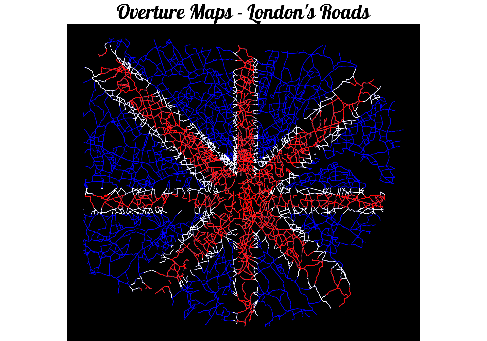

Want to see the code? Click on the black boxes on the right to show/hide the code.
The https://overturemaps.org foundation is a new organisation founded by Amazon, Meta, Microsoft and TomTom to provide high-quality open geospatial data.
Somewhat unusually they provide access to their map data in GeoParquet format which can be requested from an AWS S3 bucket or Azure blob storage location. Fortunately the https://github.com/cran/overturemapsr library hides the complexity around retrieving this data.
For this map I’ve taken all of the roads within the M25 from Overture Maps and displayed them in the colours of the Union Jack.
#First, we'll need to load a bunch of libraries so we can handle and view geospatial data
library(ggplot2)
library(overturemapsr)
library(arrow)
library(sf)
library(dplyr)
library(concaveman)
library(showtext)
# Approximate bounding box for London area
bbox <- c(xmin = -0.5, ymin = 51.2, xmax = 0.3, ymax = 51.7)
# If our cache file doesn't exist we'll need to create
if (!file.exists('./data/29/overture_roads.rdata')) {
result <- record_batch_reader(overture_type = 'segment', bbox = bbox)
roads <- result[result$subtype == "road",]
saveRDS(roads, './data/29/overture_roads.rdata', compress=FALSE)
}
roads <- readRDS('./data/29/overture_roads.rdata')
# Filter out only primary, secondary and tertiary roads
roads <- roads[roads$class=="primary" | roads$class=="secondary" | roads$class=="tertiary",]
# Load the M25 and A282 roads from a previous map!
m25 <- st_read('./data/13/Data/oproad_gb.gpkg', quiet = TRUE, query = 'select * from road_link where (road_classification_number = "M25" or road_classification_number = "A282")')
# Combine the M25 and A282 roads to form a continuous path
m25_coords <- st_union(m25) %>% st_cast('POINT') %>% st_union() %>% st_coordinates()
# Use concaveman to create a concave hull around the points
polygon_boundary <- concaveman(m25_coords)
# Convert the concave hull back to an sf polygon
m25_poly <- st_sfc(st_polygon(list(polygon_boundary)), crs = 27700) %>% st_transform(crs=4326)
# Crop the roads to the M25 boundary
roads <- st_intersection(roads, m25_poly)
#Set a thickness for the roads based on their class
roads$thickness = 1
roads$thickness <- ifelse(roads$class=="primary", 6, roads$thickness)
roads$thickness <- ifelse(roads$class=="secondary", 4, roads$thickness)
# Define the bounding box for our flag polygons
flag_bbox <- st_polygon(list(matrix(c(
bbox["xmin"], bbox["ymin"],
bbox["xmax"], bbox["ymin"],
bbox["xmax"], bbox["ymax"],
bbox["xmin"], bbox["ymax"],
bbox["xmin"], bbox["ymin"]
), ncol = 2, byrow = TRUE)))
# Convert bounding box to an sf object
flag_extent <- st_sfc(flag_bbox, crs = 4326)
# Define the central horizontal and vertical white cross
white_cross_horizontal <- st_polygon(list(matrix(c(
bbox["xmin"], mean(c(bbox["ymin"], bbox["ymax"])) - 0.02,
bbox["xmax"], mean(c(bbox["ymin"], bbox["ymax"])) - 0.02,
bbox["xmax"], mean(c(bbox["ymin"], bbox["ymax"])) + 0.02,
bbox["xmin"], mean(c(bbox["ymin"], bbox["ymax"])) + 0.02,
bbox["xmin"], mean(c(bbox["ymin"], bbox["ymax"])) - 0.02
), ncol = 2, byrow = TRUE)))
white_cross_vertical <- st_polygon(list(matrix(c(
mean(c(bbox["xmin"], bbox["xmax"])) - 0.03, bbox["ymin"],
mean(c(bbox["xmin"], bbox["xmax"])) + 0.03, bbox["ymin"],
mean(c(bbox["xmin"], bbox["xmax"])) + 0.03, bbox["ymax"],
mean(c(bbox["xmin"], bbox["xmax"])) - 0.03, bbox["ymax"],
mean(c(bbox["xmin"], bbox["xmax"])) - 0.03, bbox["ymin"]
), ncol = 2, byrow = TRUE)))
# Define the red central cross
red_cross_horizontal <- st_polygon(list(matrix(c(
bbox["xmin"], mean(c(bbox["ymin"], bbox["ymax"])) - 0.01,
bbox["xmax"], mean(c(bbox["ymin"], bbox["ymax"])) - 0.01,
bbox["xmax"], mean(c(bbox["ymin"], bbox["ymax"])) + 0.01,
bbox["xmin"], mean(c(bbox["ymin"], bbox["ymax"])) + 0.01,
bbox["xmin"], mean(c(bbox["ymin"], bbox["ymax"])) - 0.01
), ncol = 2, byrow = TRUE)))
red_cross_vertical <- st_polygon(list(matrix(c(
mean(c(bbox["xmin"], bbox["xmax"])) - 0.02, bbox["ymin"],
mean(c(bbox["xmin"], bbox["xmax"])) + 0.02, bbox["ymin"],
mean(c(bbox["xmin"], bbox["xmax"])) + 0.02, bbox["ymax"],
mean(c(bbox["xmin"], bbox["xmax"])) - 0.02, bbox["ymax"],
mean(c(bbox["xmin"], bbox["xmax"])) - 0.02, bbox["ymin"]
), ncol = 2, byrow = TRUE)))
# Diagonals: approximate using rotated rectangles
# White diagonals
white_diagonal_1 <- st_polygon(list(matrix(c(
bbox["xmin"], bbox["ymin"] + 0.05,
bbox["xmin"] + 0.05, bbox["ymin"],
bbox["xmax"], bbox["ymax"] - 0.05,
bbox["xmax"] - 0.05, bbox["ymax"],
bbox["xmin"], bbox["ymin"] + 0.05
), ncol = 2, byrow = TRUE)))
white_diagonal_2 <- st_polygon(list(matrix(c(
bbox["xmin"], bbox["ymax"] - 0.05,
bbox["xmin"] + 0.05, bbox["ymax"],
bbox["xmax"], bbox["ymin"] + 0.05,
bbox["xmax"] - 0.05, bbox["ymin"],
bbox["xmin"], bbox["ymax"] - 0.05
), ncol = 2, byrow = TRUE)))
# Red diagonals
red_diagonal_1 <- st_polygon(list(matrix(c(
bbox["xmin"], bbox["ymin"] + 0.03,
bbox["xmin"] + 0.03, bbox["ymin"],
bbox["xmax"], bbox["ymax"] - 0.03,
bbox["xmax"] - 0.03, bbox["ymax"],
bbox["xmin"], bbox["ymin"] + 0.03
), ncol = 2, byrow = TRUE)))
red_diagonal_2 <- st_polygon(list(matrix(c(
bbox["xmin"], bbox["ymax"] - 0.03,
bbox["xmin"] + 0.03, bbox["ymax"],
bbox["xmax"], bbox["ymin"] + 0.03,
bbox["xmax"] - 0.03, bbox["ymin"],
bbox["xmin"], bbox["ymax"] - 0.03
), ncol = 2, byrow = TRUE)))
# Intersect the roads with the flag polygons
red_roads <- st_intersection(st_cast(roads), st_sfc(red_cross_horizontal, red_cross_vertical, red_diagonal_1, red_diagonal_2, crs=4326))
white_roads <- st_intersection(st_cast(roads), st_sfc(white_cross_horizontal, white_cross_vertical,white_diagonal_1, white_diagonal_2
, crs=4326))
font_add_google("Lobster", "fancy_font")
showtext_auto()
ggplot(aes=aes(x,y)) +
geom_sf(data=roads, color="blue", mapping=aes(size=thickness)) +
geom_sf(white_roads, color="white", mapping=aes(size=thickness)) +
geom_sf(red_roads, color="red", mapping=aes(size=thickness)) +
scale_size_continuous(range = c(1,6)) + # Adjust size range as needed
ggtitle("Overture Maps - London's Roads") +
theme_void() +
theme(axis.line = element_blank(),panel.grid.major = element_blank(), panel.grid.minor = element_blank(), panel.border = element_blank(), panel.background = element_rect(fill = "black"), legend.position = "none",
plot.title = element_text(
family = "fancy_font", # Use the custom font
size = 60, # Font size
face = "bold", # Bold font style
hjust = 0.5 # Center align
)
)
Data: Overture Maps Foundation, overturemaps.org License for theme: ODbL © OpenStreetMap contributors. Available under the Open Database License. Data from TomTom.